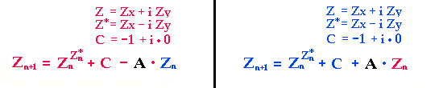
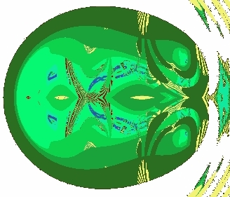
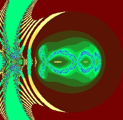

Eine
noch interessantere verkoppelte Funktion ist folgende Juliamenge

Das
gleiche Bild entsteht bei Z = (Z*)^Z - 1 als Grundgleichung. Man findet als
Bildausschnitt einen Schädel mit Gehörgängen, einer Nase mit zwei Nasenlöchern,
Hirnventrikel und Augen mit Pupillen. Wir wissen nicht, ob der Rest (der nicht
nach Schädel aussieht), lediglich zu einem feinstofflichen Wirbel gehört,
der uns zusätzlich umgibt. Das Zentrum am Koordinatenursprung (Spinnenkopf)
passt zur Lage des feinstoffliches 'Portals', das in spirituellen Texten beschrieben
wird. Es liegt vor Stirn und Nase, gilt als Tor für das Bewusstsein (in eine
andere Dimension). Alle sieben Chakren liegen an ähnlicher Position, wenn
man des Schädelfraktal als Draufsicht auffasst. Wir sehen nur den Schnitt
in Augenhöhe. Den Komplexen Zahlen fehlt eine unabhängige Höhenkoordinate.

Abgebildet als
Farbe ist lediglich die Anzahl der Rechnungschleifen, wann wegen zu großen
Zahlen abgebrochen werden musste. Es musste ÜBERALL nach kurzer Zeit (maximal
11 It.) abgebrochen werden. Das genaue Verhalten an jedem Bildpunkt kann nicht
mit Standard-Rechentechnik verfolgt werden, die Zahlen werden zu groß. Nur die
ersten Iterationen kann man verfolgen.
Der große
Schädel entsteht auf der linken Seite, im Bereich der negativen x-Achse.
Die eigentliche Quelle des Musters ist jedoch rechts, auf der positiven x-Achse
um Null bis Zwei herum, dessen Größe sich durch den Zwilling für
Verkopplungen unter 0.1 nicht ändert. Das Ändern der Verkopplung
erscheint dort im Umfeld, als ob man Flüssigkeiten durch Röhren pumpt.

Im
großen Schädel links entstehen schnell sehr große negative Zahlen,
die durch die Verkopplung entweder etwas schneller (blau) oder etwas langsamer
(rot) divergieren. Etwa bei Zx=1/A wird das Cx=-1 kompensiert oder verdoppelt,
was bereits klare Unterschiede im Divergenzverhalten bringt, die sich hier als
Schädelmuster darstellen.
Das
additive Cx der Größe Minus Eins ist hier die entscheidende symmetriebrechende
Einheit. Setzt man es ganz Null, werden beide 'Hirne' leer und strukturlos.
Mehr
Bilder , oder siehe unten, gerechnet
mit der Software UltraFractal.
Das
Fraktal der genetischen Schwingung wirkt offenbar formbildend auf Zellteilung
und Zellausrichtung, ähnlich wie eine Cladnische Klangfigur auf die Anordnung
kleiner Partikel.